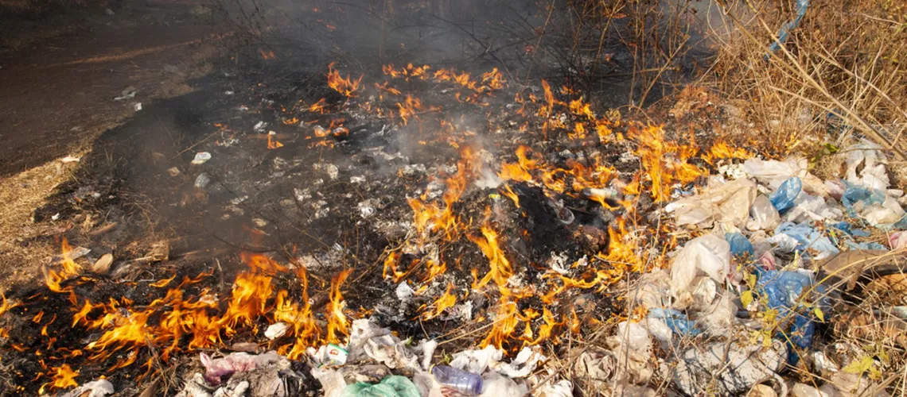

Industrial Emission:
Industrial activities emit several pollutants in the air that affect the air quality more than we can even imagine. Particulate matter 2.5 and 10, NO2, SO2, and CO are key pollutants that are emitted from industries that use coal and wood as their primary energy source for the production of their goods. Industrial pollution effects associated with your health.

Wildfires:
Not only are wildfires growing due to climate change, but air pollution is as well. Burning farm waste and stubble also significantly contributes to wildfires. It increases the amount of PM2.5 in the atmosphere, which interacts with other hazardous elements like chemical gas and pollen to create smog. Smog makes the air cloudy, making it difficult for people to breathe. This haze reduces visibility as a result. Smog inhalation symptoms include trouble breathing, irritation of the eyes, nose, and throat, itching of the respiratory tract, and more.

Open Burning of Garbage Waste:
Garbage burning outdoors poses a much greater threat to the environment and your health than you would realize. According to Engage EPW, public health is being harmed by Delhi Air Pollution. Delhi is India's second-largest garbage city, producing a staggering 9500 tons of waste daily. Experiencing open burning of trash might offer significant health dangers.
Agricultural Activities:
The declining air quality is significantly attributed to agricultural activity. The primary sources of air pollution in the immediate area are initially pesticides and fertilizers. To promote the rapid growth of crops and plants, herbicides and fertilizers are now combined with novel invasive species that are not found in nature. Pesticides have an aftertaste and an impact that lingers in the air after being sprayed on an area. In addition to destroying the crops, some of them mix with water and some soak into the ground, which has a negative impact on many people's health

Construction and Demolition:
Where dust and tiny particles are released. This can involve the release of toxins and other hazardous materials

Natural occurrences:
Such as volcanic eruptions, and dust storms, have the potential to release quantities of pollutants into the atmosphere. Although these events are natural in nature, they can have an impact on the quality of our air.